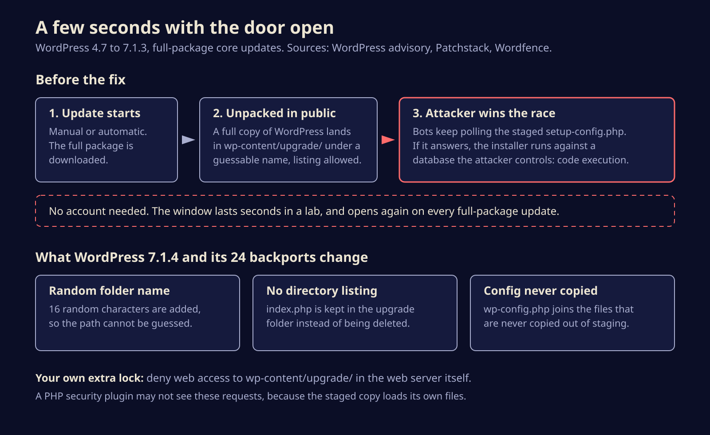
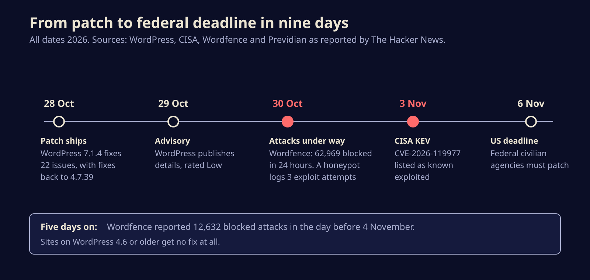

Attackers are camping on WordPress updates, waiting for a few seconds of open door
A race condition in WordPress core lets an attacker hijack a site in the moment it updates itself, and CISA now lists it as exploited. Here is how the bug works, which versions fix it, and the one server rule to add before your next update.
Somebody is sitting outside thousands of WordPress sites, knocking on the same door every few seconds, waiting for the one moment it swings open: the update. CISA added the flaw behind it, CVE-2026-119977, to its Known Exploited Vulnerabilities catalog on 3 November, and if you run WordPress anywhere from version 4.7 to 7.1.3, the fix is already out and you should confirm you have it today.
The bug is unusual because it lives in the safety routine itself. The act of updating WordPress, the thing every security guide tells you to do, briefly left a full, runnable copy of the software in a public folder.
How a routine update became the attack
When WordPress installs a complete core package, it unpacks the new files into wp-content/upgrade/ before copying them into place. Before the fix, that folder was reachable from the web, its subfolder had a name an attacker could guess, and the cleanup step deleted the small index.php file that normally stops anyone listing what is inside.
For a few seconds, then, a fresh copy of WordPress sat at a predictable address, including setup-config.php, the installer that walks you through connecting a new site to a database. Patchstack explains that this staged installer can run without the live site's configuration. An attacker who reaches it in time can point it at a database they control and turn that foothold into code running on your server.

The window is tiny. Wordfence says it lasted only seconds in normal lab conditions, and Patchstack rates the attack as high complexity and says it would not call it practical. That is the case for calm. The case against: the vulnerable code goes back to WordPress 2.8, and the window reopens on every full-package update, including the unattended background ones that run while nobody is watching.
The bots were already waiting
Exploit attempts followed the patch almost immediately. WordPress shipped 7.1.4 on 28 October and published its advisory, credited to researcher Umut Bayram, on 29 October. By 30 October, Wordfence told The Hacker News it had blocked 62,969 attacks aimed at the flaw in a single day, after logging more than 18,500 requests for staged installer paths in the first 21 hours after disclosure.
The traffic shows patience rather than precision. Wordfence's Alex Thomas described the two biggest sources polling small groups of sites for about 14.5 hours straight, while others cycled through staging folder names and version strings. Previdian, which runs honeypots, logged three exploit attempts on 30 October. On 4 November, Wordfence was still counting 12,632 blocked attacks in the previous 24 hours.
None of the reports we read describe a confirmed compromised site yet. CISA's listing means it has evidence of exploitation, and US federal civilian agencies have until 6 November to patch.

Low or high, depending on who you ask
The two ratings could hardly be further apart. WordPress's own advisory rates the issue Low. The CVE record carries a CVSS score of 8.1, which is High, as The Hacker News reports. Both readings are defensible: the attack is hard to time, but it needs no login and ends in full control of the server. CISA's listing settles the practical question. Someone thinks it is worth trying at scale.
The fix in 7.1.4 does three things, according to Patchstack: it adds 16 random characters to the staging folder name so it cannot be guessed, it stops deleting the index.php that blocks folder listing, and it adds wp-config.php to the files that are never copied out of the staging area. It shipped alongside 21 other fixes, mostly stored cross-site scripting bugs in blocks, the editor and the Interactivity API. One of those reports is credited to Anthropic.
What to do before your next update
- Check your version. In the dashboard, look under Updates. With WP-CLI, run
wp core version. Fixed releases are 7.1.4, 7.0.8, 6.9.11, 6.8.12 and so on down every branch to 4.7.39. Sites on 4.6 or older get no fix and need a real upgrade. - Do not assume the auto-update worked. Most sites should have received it in the background, but Wordfence advises checking rather than trusting. Managed hosts, staging copies and forgotten side projects are where unpatched installs hide.
- Block the staging folder at the web server. Deny all web access to
wp-content/upgrade/in your server or virtual host configuration, not in a file inside that folder. On nginx, alocation ^~ /wp-content/upgrade/ { deny all; }block does it; on Apache,RedirectMatch 403 ^/wp-content/upgrade/in the site root.htaccess. Between updates the folder should hold nothing but anindex.php. - Add the rule first if you are still on an old version. The update to 7.1.4 is unpacked by your current, unpatched code, so a full-package update can open the window one last time.
- Do not lean on a security plugin alone. Patchstack notes that a PHP firewall will not catch this, because the staged copy loads its own files and skips your must-use plugins.
- Look back. Search your access logs for requests to PHP files under
wp-content/upgrade/, especially around the times core updates ran, and check for admin accounts, plugins or PHP files you did not create.
The most dangerous few seconds in a site's life turn out to be the ones spent getting safer.
Automatic updates are still the best thing that ever happened to WordPress security, and nothing here argues for turning them off. It argues for treating the update path as attack surface like any other. Every self-updating system, from browsers to coding agents that pull their own plugins, has a moment where new code sits half-installed. Attackers have noticed that those moments are predictable, and now they schedule around them.
Sources
- WordPress, Version 7.1.4 release notes
- WordPress security advisory GHSA-4w3m-c66w-69mg
- CISA, CISA Adds One Known Exploited Vulnerability to Catalog
- The Hacker News, CISA confirms hackers exploiting WordPress core flaw during software upgrades
- The Hacker News, WordPress RCE flaw draws nearly 63,000 attacks
- Patchstack, WordPress 7.1.4 security release
Written with AI for Bade's Mod Shop. Facts are checked against the sources above on the day of publishing; if one is wrong, open an issue.